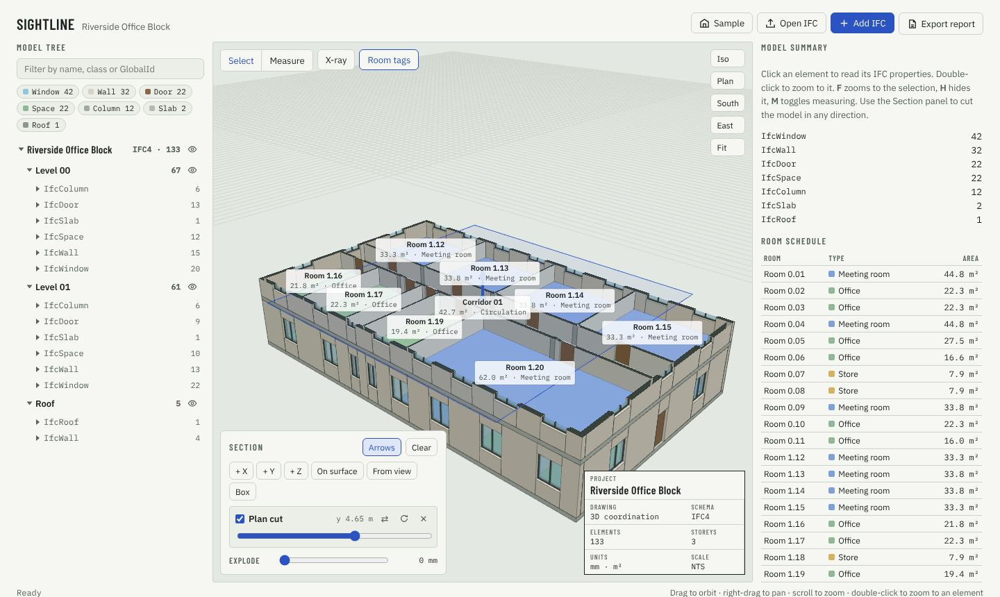

Model tree and properties
Browse by file, storey and IFC class. Click any element to see its GlobalId, material, property sets and quantities. Search by name, class or GlobalId.
Free IFC viewer · Runs in your browser
Explore the model tree and properties, cut sections in any direction, merge architecture, structure and MEP models, then export PDF and Excel reports. Nothing to install, and your files never leave your computer.

What you can do
Browse by file, storey and IFC class. Click any element to see its GlobalId, material, property sets and quantities. Search by name, class or GlobalId.
Add as many section planes as you need, on an axis, flat on any surface you click, or square to your view. Drag the arrows, rotate planes, or box in one room.
Add several IFC files to one scene. They stay aligned on the project origin, and you can colour, hide or remove each file.
Click two points to get the distance and the height difference in millimetres.
A printable model report with a 3D view, element counts per storey, quantities and a room schedule. Or spreadsheets of every element and its properties, ready for Excel.
The model is read on your own device. No account, no upload, no server keeping copies of your project.
How it works
Save your model as IFC from Revit (File → Export → IFC), ArchiCAD, Tekla, Allplan or any other BIM tool. IFC2X3 and IFC4 both work.
Click Open IFC or drag the file onto the viewer. Use Add IFC to bring in more disciplines.
Cut, measure and inspect, then choose Export report for a PDF summary or Excel-ready CSV files.
Your files stay with you
Sightline reads IFC files with an engine that runs inside your browser. Opening a model reads it from your disk into the page, and the reports are made on your machine too.
That makes it safe for confidential projects, and it costs nothing to run.
Questions
IFC files (.ifc) in the IFC2X3 and IFC4 schemas. IFC is the open BIM exchange format that every major BIM tool can export.
Not directly. Those are closed Autodesk formats. Export IFC from Revit with File → Export → IFC, or export IFC from the tools that made your Navisworks models, then open that file here.
No. The file is read inside your browser and stays on your device. Closing the tab clears it.
Yes. There is no account and no limit on the number of models.
The PDF report has the file list, a picture of the current 3D view, element counts per storey and IFC class, quantity totals (length, area, volume) and a room schedule. The CSV exports are an element list with every property, quantities by class and a room schedule.
That depends on your computer's memory. Typical building models open on a normal laptop; very large federated models are smoother on a desktop with plenty of RAM.
Yes, in any modern browser. A larger screen makes it easier to use the model tree and properties side by side.